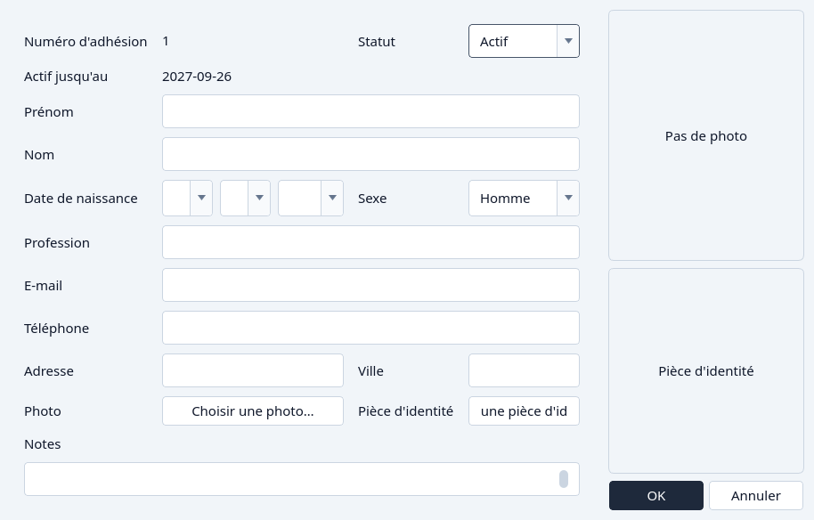
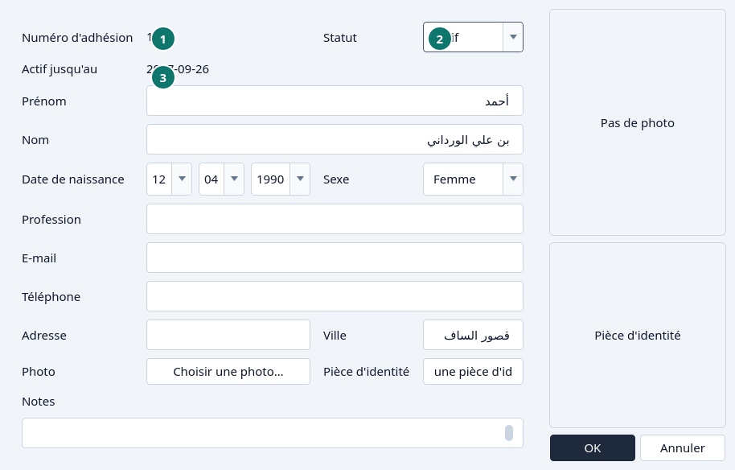
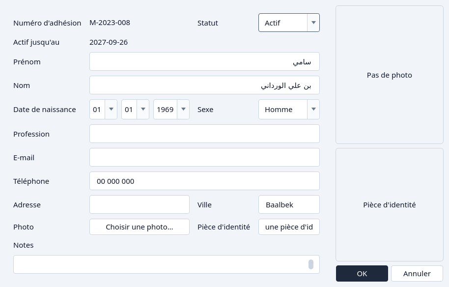

Inscrire un adhérent
Inscrire un adhérent, le renouveler, ou terminer l'inscription plus tôt.
Inscrire
Cliquez Ajouter un adhérent.
La fenêtre donne un numéro d'adhésion. Vous ne pouvez pas en saisir un.

Ajouter un adhérent, à l'ouverture. Remplissez le nom, la date de naissance et le reste.
Prénom, Nom et Date de naissance sont obligatoires. La date se choisit dans trois listes : jour, mois et année. L'application en déduit la tranche d'âge, et pose Actif jusqu'au à un an moins un jour. Le statut commence à Actif.

Un adhérent neuf, avec le numéro, le statut et le dernier jour actif marqués. - Numéro d'adhésion — lecture seule.
- Statut
- Actif jusqu'au
Cliquez OK.
Annuler abandonne la fenêtre.


Renouveler
Ouvrez l'adhérent avec Modifier. Le statut indique Inactif quand le dernier jour actif est passé.
Ouvrez Statut et choisissez Actif.
La liste du statut pour un adhérent qui n'est pas actif. Actif jusqu'au passe à un an moins un jour. Il se met à jour dans la fenêtre avant l'enregistrement, pour que vous voyiez le jour que vous allez garder.

Après Actif, le dernier jour actif a avancé. Cliquez OK.


Pour terminer une inscription plus tôt, choisissez Inactif à la place. Actif jusqu'au devient hier, et l'adhérent ne peut plus emprunter. Voir Statut d'un adhérent.
Et si…
- Le prénom ou le nom est vide.
- La date de naissance manque, n'est pas une vraie date, ou est après aujourd'hui.
- L'adresse e-mail est remplie et n'est pas une adresse valide.